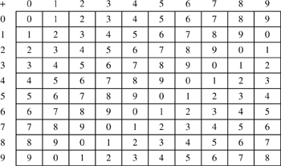
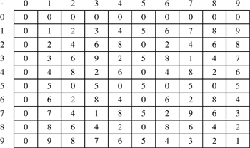
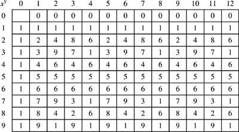

Networking Security Networking Security Networking Security Security Networking Security Networking Security Networking Charlie Kaufman Radia Perlman Mike Speciner Prentice Hall Network Security: Private Communication in a Public World, Second Edition
6.2. Modular Arithmetic
There was a young fellow named Ben
Who could only count modulo ten.
He said, "When I go
Past my last little toe
I shall have to start over again."
ÂAnonymous
Most of the public key algorithms are based on modular arithmetic. Modular arithmetic uses the non-negative integers less than some positive integer n, performs ordinary arithmetic operations such as addition and multiplication, and then replaces the result with its remainder when divided by n. The result is said to be modulo n or mod n. When we write "x mod n", we mean the remainder of x when divided by n. Sometimes we'll leave out "mod n" when it's clear from context.
6.2.1. Modular Addition
Let's look at mod 10 addition. 3 + 5 = 8, just like in regular arithmetic. The answer is already between 0 and 9. 7 + 6 = 13 in regular arithmetic, but the mod 10 answer is 3. Basically, one can perform mod 10 arithmetic by using the last digit of the answer. For example,
5 + 5 = 0 | 3 + 9 = 2 | 2 + 2 = 4 | 9 + 9 = 8 |
Let's look at the mod 10 addition table (Figure 6-1). Addition of a constant mod 10 can be used as a scheme for encrypting digits, in that it maps each decimal digit to a different decimal digit in a way that is reversible; the constant is our secret key. It's not a good cipher, of course, but it is a cipher. (It's actually a Caesar cipher.) Decryption would be done by subtracting the secret key modulo 10, which is an easy operationÂjust do ordinary subtraction and if the result is less than 0, add 10.

Just like in regular arithmetic, subtracting x can be done by adding -x, also known as x's additive inverse. An additive inverse of x is the number you'd have to add to x to get 0. For example, 4's inverse will be 6, because in mod 10 arithmetic 4 + 6 = 0. If the secret key were 4, then to encrypt we'd add 4 (mod 10), and to decrypt we'd add 6 (mod 10).
6.2.2. Modular Multiplication
Now let's look at the mod 10 multiplication table (Figure 6-2). Multiplication by 1, 3, 7, or 9 works as a cipher, because it performs a one-to-one substitution of the digits. But multiplication by any of the other numbers will not work as a cipher. For instance, if you tried to encrypt by multiplying by 5, half the numbers would encrypt to 0 and the other half would encrypt to 5. You've lost information. You can't decrypt the ciphertext 5, since the plaintext could be any of {1, 3, 5, 7, 9}. So multiplication mod 10 can be used for encryption, provided that you choose the multiplier wisely. But how do you decrypt? Well, just like with addition, where we undid the addition by adding the additive inverse, we'll undo the multiplication by multiplying by the multiplicative inverse. In ordinary arithmetic, x's multiplicative inverse is 1/x. If x is an integer, then its multiplicative inverse is a fraction. In modular arithmetic though, the only numbers that exist are integers. The multiplicative inverse of x (written x-1) is the number by which you'd multiply x to get 1. Only the numbers {1, 3, 7, 9} have multiplicative inverses mod 10. For example, 7 is the multiplicative inverse of 3. So encryption could be performed by multiplying by 3, and decryption could be performed by multiplying by 7. 9 is its own inverse. And 1 is its own inverse. Multiplication mod n is not a secure cipher, but it works, in the sense that we can scramble the digits by multiplying by x and get back to the original digits by multiplying by x-1.

It is by no means obvious how you find a multiplicative inverse in mod n arithmetic, especially if n is very large. For instance if n was a 100-digit number, you would not be able to do a brute-force search for an inverse. But it turns out there is an algorithm that will efficiently find inverses mod n. It is known as Euclid's algorithm. §7.4 Euclid's Algorithm gives the details of the algorithm. For here, all you need to know is what it does. Given x and n, it finds the number y such that x·y mod n = 1 (if there is one).
What's special about the numbers {1, 3, 7, 9}? Why is it they're the only ones, mod 10, with multiplicative inverses? The answer is that those numbers are all relatively prime to 10. Relatively prime means they do not share any common factors other than 1. For instance, the largest integer that divides both 9 and 10 is 1. The largest integer that divides both 7 and 10 is 1. In contrast, 6 is not one of {1, 3, 7, 9}, and it does not have a multiplicative inverse mod 10. It's also not relatively prime to 10 because 2 divides both 10 and 6. In general, when we're working mod n, all the numbers relatively prime to n will have multiplicative inverses, and none of the other numbers will. And mod n multiplication by any number x relatively prime to n will work as a cipher because we can multiply by x to encrypt, and then multiply by x-1 to decrypt. (Again let us hasten to reassure you that we're not claiming it's a good cipher, in the sense of being secure. What we mean by its being a cipher is that we can modify the information through one algorithm (multiplication by x mod n) and then reverse the process (by multiplying by x-1 mod n).
How many numbers less than n are relatively prime to n? Why would anyone care? Well, it turns out to be so useful that it's been given its own notationÂφ(n). φ is called the totient function, supposedly from total and quotient. How big is φ(n)? If n is prime, then all the integers {1, 2,...n-1} are relatively prime to n, so φ(n) = n-1. If n is a product of two distinct primes, say p and q, then there are (p-1)(q-1) numbers relatively prime to n, so φ(n) = (p-1)(q-1). Why is that? Well, there are n = pq total numbers in {0, 1, 2,...n-1}, and we want to exclude those numbers that aren't relatively prime to n. Those are the numbers that are either multiples of p or of q. There are p multiples of q less than pq and q multiples of p less than pq. So there are p+q-1 numbers less than pq that aren't relatively prime to pq (we can't count 0 twice!). Thus φ(pq) = pq - (p+q-1) = (p-1)(q-1).
6.2.3. Modular Exponentiation
Modular exponentiation is again just like ordinary exponentiation. Once you get the answer, you divide by n and get the remainder. For instance, 46 = 6 mod 10 because 46 = 4096 in ordinary arithmetic, and 4096 = 6 mod 10. Let's look at the exponentiation table mod 10. We are purposely putting in extra columns because in exponentiation, xy mod n is not the same as xy+n mod n. For instance, 31 = 3 mod 10, but 311 = 7 mod 10 (it's 177147 in ordinary arithmetic).
Let's look at mod 10 exponentiation (Figure 6-3). Note that exponentiation by 3 would act as an encryption of the digits, in that it rearranges all the digits. Exponentiation by 2 would not, because both 22 and 82 are 4 mod 10. How would you decrypt? Is there an exponentiative inverse like there is a multiplicative inverse? Just like with multiplication, the answer is sometimes. (I bet people are going to hate our inventing the word exponentiative, but it's a useful word.)

Now we'll throw in an amazing fact about φ(n). Looking at the exponentiation table, we notice that columns 1 and 5 are the same, and 2 and 6 are the same, and 3 and 7 are the same. It turns out that xy mod n is the same as x(y mod φ(n)) mod n. In the case of 10, the numbers relatively prime to 10 are {1, 3, 7, 9}, so φ(n) = 4. So that's why the ith column is the same as the i+4th column. (Note for picky mathematiciansÂthis fact isn't true for all n, but it's true for all n we care about. It's true for primes and it's true for any product of distinct primes, i.e. it's true for any n that doesn't have p2 as a factor for any prime pÂsuch an n is known as square free.)
What we'll find important is the special case of this where y = 1 mod φ(n), i.e. if y = 1 mod φ(n), then for any number x, x y = x mod n. Armed with this knowledge, let's look at RSA.
|